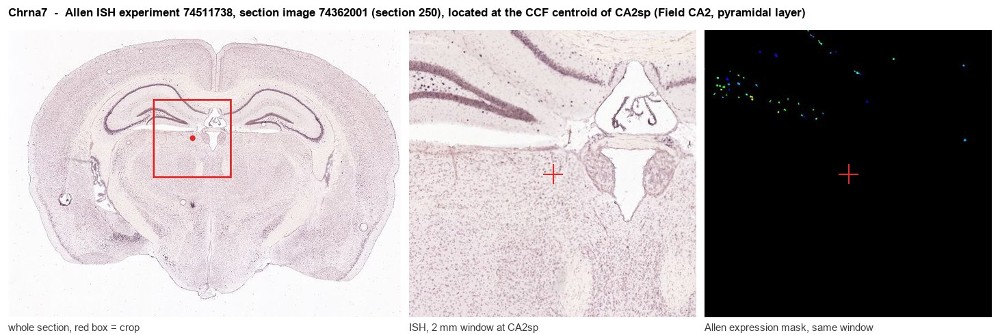
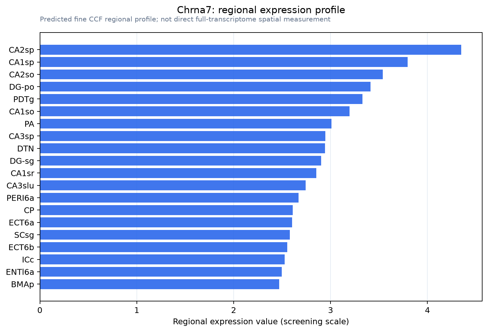

Chrna7
Neuronal acetylcholine receptor subunit alpha-7 (nAChR7) (Nicotinic acetylcholine receptor subunit alpha-7)
Spatial tier: REGION_BIASED · Class: ION_CHANNEL · Top region: CA2sp (Field CA2, pyramidal layer) · Positive regions: 43/554
41.7Discovery Score
40.5Targetability Score
CEvidence grade C
What this means: Chrna7: fine CCF profile is region-biased toward CA2sp (top regions: CA2sp, CA1sp, CA2so, DG-po, PDTg); this is a discovery lead, not direct proof.
Function in CA2sp: evidence, prediction, innovation
- Gene function
- Chrna7 encodes the alpha7 nicotinic acetylcholine receptor subunit, which forms homopentameric ligand-gated channels with unusually high Ca2+ permeability and fast desensitisation. Alpha7 receptors bind alpha-bungarotoxin, sit largely presynaptically and on interneurons, and couple ACh release to Ca2+-dependent transmitter release and CaMKII/CREB plasticity signalling. Orr-Urtreger et al. 1997 showed knockout mice lose all hippocampal alpha-bungarotoxin binding and fast nicotinic currents.
- Region function
- Hippocampal CA2 is a small pyramidal subfield between CA3 and CA1 that receives dense entorhinal layer II and septal/supramammillary input and is required for social recognition memory and for pacing sharp-wave ripples.
- Published in this region
- inferred Nicotinic signalling in CA2 is established but not yet resolved to alpha7. Pimpinella et al. 2021 showed septal cholinergic input drives CA2 principal cells by nAChR-mediated disinhibition and that an nAChR antagonist infused into CA2 impairs social novelty discrimination; Benoy et al. 2021 found nicotinic receptors maintain carbachol-LTD at CA2 synapses. Allen ISH (experiments 69237107, 74511738) shows clear Chrna7 in the CA2 pyramidal layer (energy ~5.0 vs 2.2 whole brain), and Frazier et al. 1998 localised functional alpha7 currents to hippocampal interneurons.
- Predicted function
- Prediction: alpha7 receptors on CA2-targeting interneurons and presynaptic terminals are the most likely mediators of the septal cholinergic disinhibition Pimpinella described, providing Ca2+ influx that transiently lifts perisomatic inhibition so CA2 cells fire during encounters with novel conspecifics. Local methyllycaconitine or CA2-restricted Chrna7 deletion should impair social novelty discrimination while sparing object memory; the agonist PNU-282987 or PAM PNU-120596 should enhance it and increase ripple-associated CA2 firing.
- Innovation
- ★★☆☆☆ 2/5 Alpha7 in hippocampus is heavily studied and CA2 nicotinic disinhibition is already published; only the subunit-specific CA2-restricted causal test is missing.
- Tools
- Chrna7 knockout mice (JAX 003232, B6.129S7-Chrna7tm1Bay/J) and floxed Chrna7 alleles; agonists PNU-282987 and choline; PAMs PNU-120596 and JWX-A0108; antagonists methyllycaconitine and alpha-bungarotoxin; fluorescent alpha-conotoxin probes; Amigo2-Cre for CA2 and ChAT-Cre for septal input.
- References
Direct evidence located at the region

Allen ISH experiment 74511738, section image 74362001 (section 250): the section that contains the CCF centroid of Field CA2, pyramidal layer according to the Allen image-to-atlas alignment (reference_to_image), with a 2 mm window around that point. Left: whole section, red box = window. Middle: ISH signal. Right: Allen's expression-mask view of the same window. open this image in the Allen viewer
Look it up yourself: Allen Mouse Brain ISH for Chrna7Allen reference atlas: CA2sp (structure 446)ABC Atlas MERFISH viewer(in the ABC Atlas choose dataset MERFISH-C57BL6J-638850-CCF, colour cells by gene "Chrna7" or by parcellation_substructure "CA2sp")All genes confined to CA2sp + 3-D brain
Direct spatial evidence
MERFISH REGION LOCATOR

Regional expression figure

Predicted WMB × fine-CCF profile; not direct full-transcriptome spatial measurement.
Spatial profile
Evidence and specificity
- Evidence status
- PREDICTED_FINE
- Direct sources
- None; predicted localization only
- Exclusive threshold
- 12 positive regions out of 554
- Spatial specificity
- 0.280
- Top-region fraction
- 0.042
- Filter status
- PASS
Interpretation limits
- Cell-type-to-region projection is imputed expression, not direct spatial measurement.
- Adult reference atlases do not establish stability across age, sex, strain, state, or disease.
- Transcript abundance does not guarantee protein abundance or genetic-tool performance.